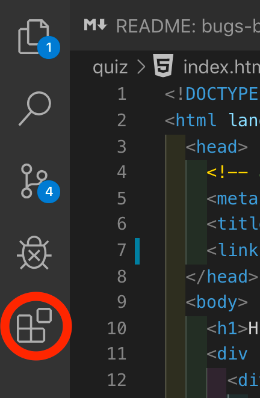

1.3. Installation of the vscode editor for ROS2
We use a good code editor (very important for productivity) which is vscode from Github.
1.3.1. Installation of vscode
Go to the vscode website and download the version corresponding to Ubuntu 22.04
Go to the directory for global vscode configuration settings for the current user and create an empty keybindings.json file:
cd ~/.config/Code/User
touch keybindings.json
You will open the keybindings.json file (which you just created in your home directory ~/.config/Code/User) and fill it with the following content:
1[
2 {
3 "key": "ctrl+q",
4 "command": "-workbench.action.quit"
5 },
6 {
7 "key": "enter",
8 "command": "-restructuredtext.editor.listEditing"
9 }
10]
Configuring keyboard shortcuts with this file allows you to:
remove the
Ctrl+qshortcut (lines 2-5) which is used by vscode to close the editor. The lettersa,z, andssurrounding the letterqon a French AZERTY keyboard, this prevents accidentally closing the editor when trying to, for example:type
Ctrl+ato select all the text ortype
Ctrl+zto undo an action ortype
Ctrl+sto save the file.
fix a bug related to the esbonio extension that allows displaying sphinx documentation in vscode (lines 6-9).
Reload vscode to apply these changes by typing Ctrl+Shift+P and then typing Developer: Reload Window.
The keyboard shortcuts file is not located in the project directory but in the global vscode configuration settings directory for the current user because these settings are considered by vscode as regional and/or user-specific settings. It is possible to use an extension that allows defining profiles and using them depending on the project or work environment.
1.3.2. Configure a ROS2 vscode project
For a project with vscode, certain settings need to be configured so that the editor is adapted to ROS2 and, more generally, to have certain settings for better productivity.
To do this, in a new project, you need to create a .vscode folder at the root of the project and add a settings.json file with the following content:
1{
2 "editor.formatOnSave": true,
3 "editor.detectIndentation": true,
4 "editor.formatOnPaste": true,
5 "editor.wordWrap": "on",
6 "C_Cpp.clang_format_sortIncludes": false,
7 "python.formatting.autopep8Args": [
8 "--ignore",
9 "E402"
10 ],
11 "terminal.integrated.scrollback": 100000,
12 "workbench.editor.enablePreview": false,
13 "[restructuredtext]": {
14 "editor.tabSize": 3
15 },
16}
The options in this file allow:
to format files on each save with automatic formatting tools and also during copy-paste operations (lines 2-4). This is particularly useful for languages where indentation has meaning for the compiler, such as Python, reStructuredText, YAML, etc.
to ensure that the code is always fully visible even when the window is too small by wrapping lines in the editor but not in the file (lines 5). This is noticeable because the line number does not change on the left.
to ensure that indentation is always done with spaces in reStructuredText (.rst, the format of sphinx documentation files in this course) (lines 13-15).
to not rearrange the order of includes in C/C++ (line 6), which can lead to errors for certain compilation setups, especially in embedded programming.
to ignore the E402 error in Python to allow importing modules anywhere in the code (lines 7-10)
to increase the terminal history size (line 11)
to keep the files viewed open in the editor when they have been opened by preview actions (line 12), such as when viewing a line related to an error in a log or compilation process. This allows having both the log or error file and the code file open simultaneously in the editor.
1.3.3. Tests
To open the current directory with vscode:
code .
1.3.4. Installation of vscode extensions
In vscode, you will click on the icon

Figure 1.2 Click on the Extensions icon
And you will install the following extensions which will be very useful for the course:
1.3.4.1. Code editing:
Gremlins tracker by Nicolas Hoizey
ID: nhoizey.gremlins
allows you to see all invisible characters in the code that can ruin our lives
1.3.4.2. git:
Git Graph by mhutchie
ID: mhutchie.git-graph
1.3.4.3. python:
Python by microsoft
ID: ms-python.python
Python Debugger by microsoft
ID: ms-python.debugpy
1.3.4.4. Documentation:
Esbonio by Swyddfa
ID: swyddfa.Esbonio
1.3.4.5. c/c++/ embedded:
C/C++ by microsoft
ID: ms-vscode.cpptools
GDB Debugger - Beyond by coolchyni
ID: coolchyni.beyond-debug
vscode-valgrind by krosf
ID: krosf.vscode-valgrind
CMake Tools by microsoft
ID: ms-vscode.cmake-tools
Debug Visualizer by Henning Dieterichs
ID: hediet.debug-visualizer
Hex Array Formatter by AloyseTech
ID: AloyseTech.hex-array-formatter
1.3.4.6. ROS2:
Uncrustify by Zachary Flower
ID: zachflower.uncrustify
allows proper formatting of ROS2 files
ROS2 by nonanonno
ID: nonanonno.vscode-ros2
enables syntax highlighting for ROS2 files
ROS2 by JaehyunShim
ID: jaehyunshim.vscode-ros2
allows using ROS2 code patterns and quickly adding them to your code
ROS 2 Ament Task Provider by Allison Thackston
ID: althack.ament-task-provider
adds automatic tasks, particularly for testing the formatting of ROS2 files
1.3.4.7. AI Assistant:
GitHub Copilot by github
ID: GitHub.copilot